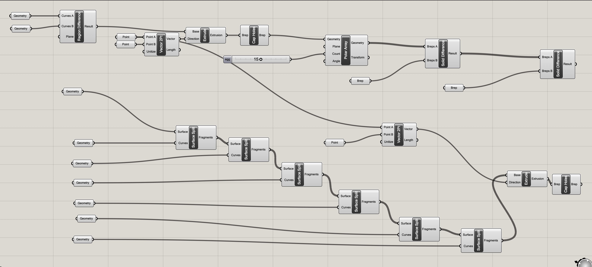
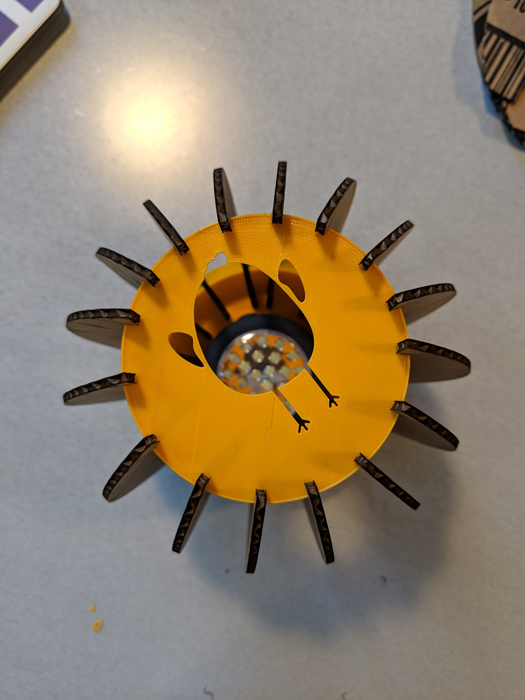
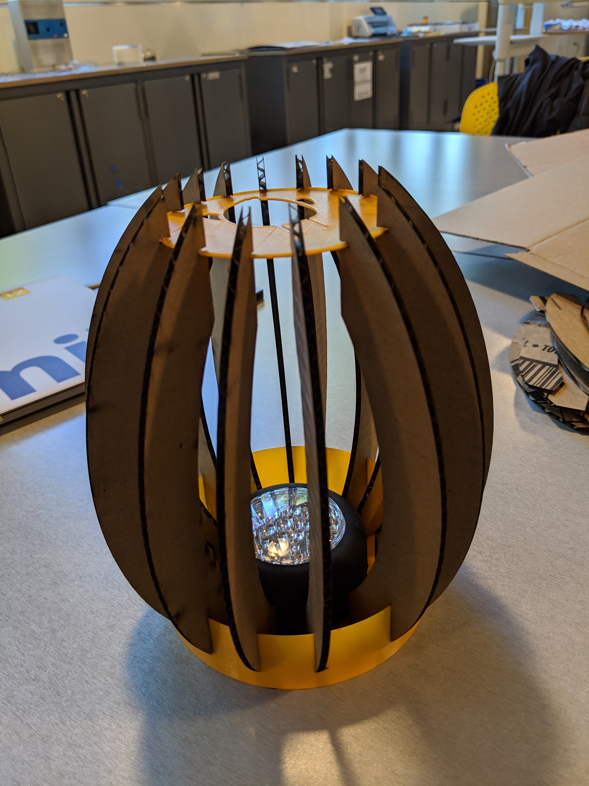

Lamp!
I started this project wanting to make an egg because of easter. I looked up a tutorial to make an egg in rhino and followed it. I also drew a chick in rhino because I wanted to incorporate that into my lamp somehow.
I used grasshopper to extrude parts and make a polar array of my curve. I decided to make a container for the light and a top part to hold the pieces together. The plan was for the chick to be in the top part and the light would project the chick sillouhette.
Here is the light holder printing. I initially had problems with the printer not being level so the staff helped me find the setting to level it.

The connections for my chick face didnt get printed and I am not sure why and ran out of time to try again. I will try to print again later and update this thread.
Cardboard was easy to cut out because we have been doing that for the past couple of weeks. Settings used: 25 speed, 100 power, 50 frequency. I had to scale my file to inches in order for it to be the right size. The slits were also too wide on my initial cut and didnt fit onto my container nicely. I manually created a new shape in rhino.
Here are pictures of my final product assembled.